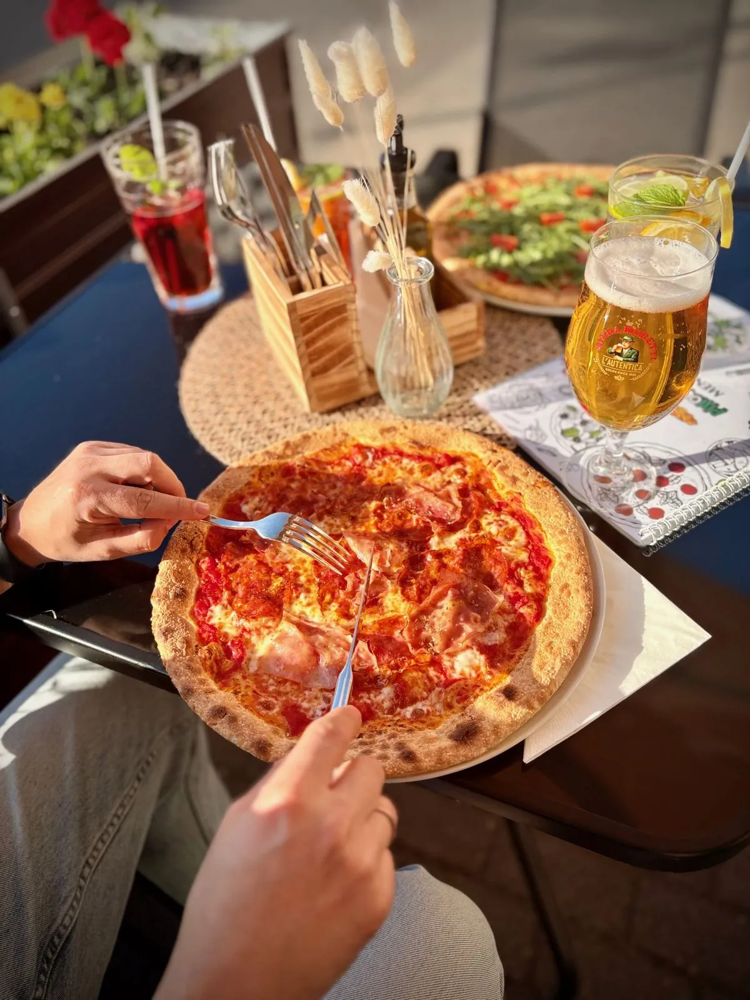
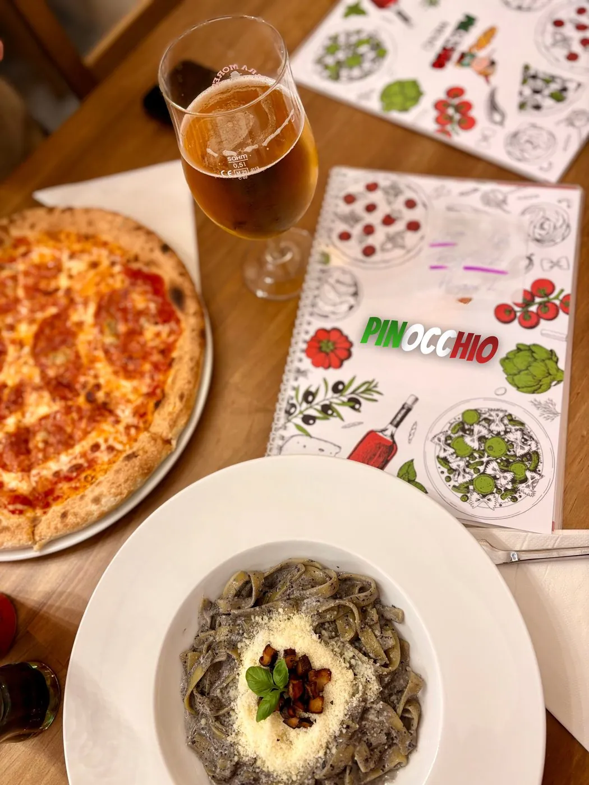
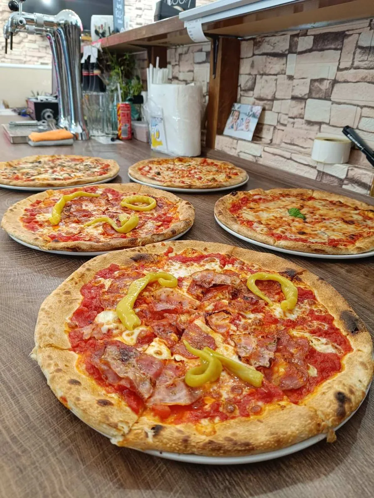
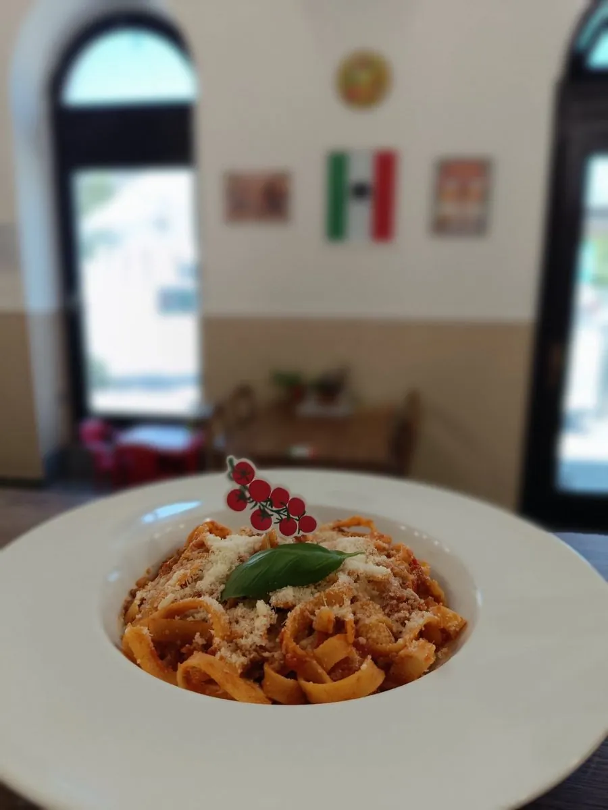
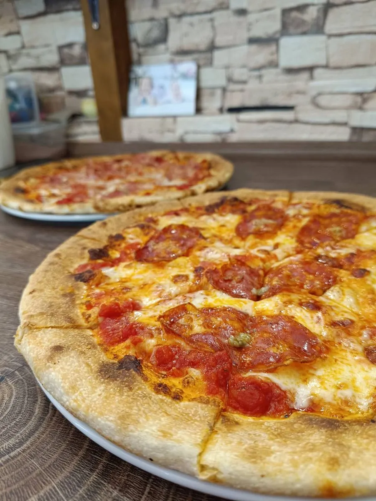

Toszkána íze Baján
Kemencében sült pizzák és friss paszták, eredeti toszkán recept alapján — valódi olasz ízek.

Kemencében sült pizzák és friss paszták, eredeti toszkán recept alapján — valódi olasz ízek.
Kedves kiszolgálás, nagyon finom ételek, meleg szívvel ajánlom. Az eredeti olasz pizzával vetekedő ízek. 🍕
Finom a pizzájuk, eddig 3 fajtát kóstoltam meg! Tésztás ételük is finom! Nincsen lespórolva a feltét! Remélem a továbbiakban is ilyen finom pizzákat fognak sütni! 😊
Isteni finom olasz jellegű vékony tésztás pizza, jó ár-érték arányban és nagyon kedves kiszolgálás!!! 😎 Köszönjük!
Üdvözlünk a Pinocchio Pizzériában. Hosszú kelesztésű, kézzel készített tészta, válogatott alapanyagok és a hagyományos olasz konyha tiszta ízei.
Kemencében sült pizzák és frissen készült paszták – egyszerűen, őszintén, olaszul.
Pinocchio Pizzeria. Ahol minden falat Toszkánát idézi.



Csapolt sör, ami tökéletesen illik egy igazi pizza mellé.
Olasz és hazai borok kínálata, hogy minden fogáshoz megtaláld a párját.

„Nálunk minden pizza és minden tészta kézzel, gondosan, szívvel és lélekkel készül.”
Pinocchio Pizzéria, BajaIgen, OTP, MBH és K&H SZÉP-kártyát is elfogadunk.
Igen, bankkártyát és készpénzt is elfogadunk.
Hétvégén és ünnepnapokon érdemes előre foglalni, hogy biztosan legyen szabad asztal.
Igen, telefonon leadott rendeléseket személyesen is át lehet venni.
Igen, jó időben hangulatos teraszunk is várja vendégeinket.
Éttermünk Baja belvárosában található, a környéken több parkolóhely is elérhető.
Nem találja, amit keres? Hívjon minket bizalommal: +36 30 755 6846
Éhes lettél? Hívjon minket, és percek alatt asztalt foglalunk Önnek.
Hívjon most
Éttermünkben SZÉP-kártyás fizetésre is van lehetőség. Elfogadjuk az OTP, MBH és K&H SZÉP-kártyákat, a vendéglátás alszámláról történő fizetéssel.